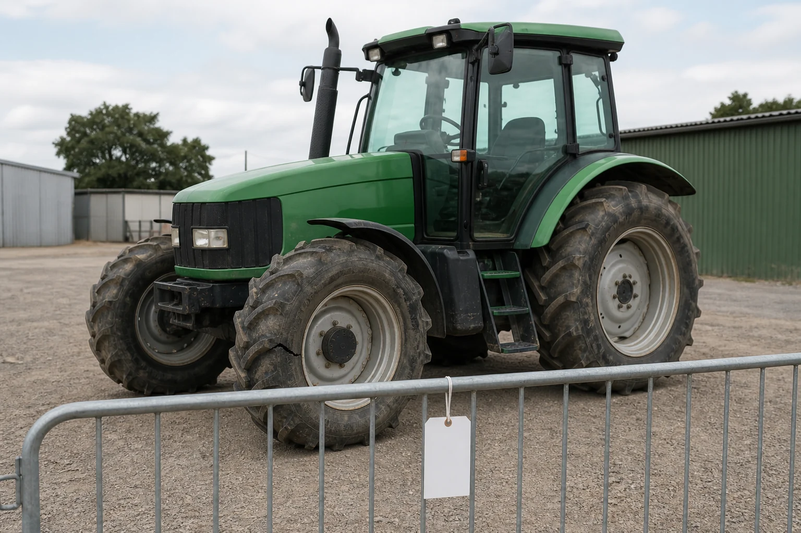

Learning purpose
Recognise the purpose of a pre-start and decide when a defect stops the task and must be reported.
Task 3 · Lesson 2 of 4
Recognise the purpose of a pre-start and decide when a defect stops the task and must be reported.
Learning purpose
Recognise the purpose of a pre-start and decide when a defect stops the task and must be reported.
Success criteria
Learning boundary
Supplementary learning and formative practice only. Current RTO assessment, local procedures and authorised supervision control real work.

The purpose of a pre-start is to compare the actual machine and planned task with the current authorised checklist and information before use. It helps identify visible damage, missing information, changed condition or another reason the machine should not enter the task.
This lesson teaches what the decision is for, not a machine inspection sequence. The exact items, access, isolation, sequence and acceptable condition come from the current manual, local procedure and supervised demonstration.
Records and manuals must relate to the tractor and equipment actually nominated for the job. A checklist from a similar model or a remembered process may omit a feature or condition that matters.
Before relying on information, confirm that the identifiers and version match the authorised source. If identity cannot be verified, record the uncertainty and refer it rather than transferring assumptions from another machine.
A finding can be confirmed acceptable by the authorised source, visibly abnormal, or unconfirmed because information is missing or unreadable. This classification supports clear reporting without asking the learner to diagnose a fault.
Use observable language such as 'fresh fluid visible beneath the machine' or 'inspection status cannot be read'. Avoid unsupported labels such as 'minor leak' or 'safe enough for today'.

A defect, malfunction, irregular performance, damage or unconfirmed critical status must be reported through the current workplace process. The learner should not test the problem through operation or make an unapproved repair.
The designated person decides inspection, isolation, repair and return-to-use status. The learner's role is to keep the evidence accurate, prevent unauthorised assumptions and preserve the record trail.
Fictional worked example
Observed evidence: During a fictional teacher-led inspection, Casey sees fresh fluid on the ground under the nominated tractor and cannot identify its source. Decision and reason: The condition is abnormal and cannot be accepted by guesswork. Safe action: Casey does not operate or investigate moving parts; they report the exact location and observation. Result: The supervisor excludes the tractor from the planned task pending an authorised check. Next check or record: Casey marks the status as referred and records the supervisor's direction in the current system.
A defect report is incomplete if the next person can still reasonably believe the machine is available. The workplace procedure controls how exclusion, tagging, access and communication are managed.
The learner should confirm that the designated person received the report and understand the recorded status. They should never invent a tag, move the machine or declare it safe to return to use.
A reliable defect record connects machine identity, time, task context, observable finding, person notified and status or direction received. This allows maintenance and planning roles to make decisions from evidence.
The record does not prove that the learner assessed machine serviceability or completed an RTO observation. Formal assessment and return-to-use decisions remain in the authorised systems.
Formative practice
Each option explains the consequence. These answers save only on this device.
Written application
Apply and keep a learning record
Sort teacher-provided fictional findings into Confirmed, Abnormal and Unconfirmed. Write a factual referral for one item. Do not touch, operate, test or repair equipment as part of this website activity.
Learning record: A supplementary-learning finding classification and defect-referral note for teacher feedback.
Lesson responses and the activity are formative learning only. Formal sufficiency and competence remain with the current RTO process.
Source basis: AHCMOM202 Release 1 requirements for pre-operational checks, reporting faults and maintaining use records, plus SafeWork NSW guidance on training, supervision and machinery risk. Exact inspection and exclusion procedures remain local-authority content.